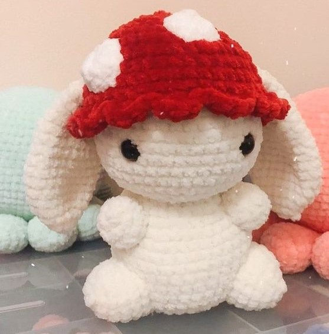

Bienvenido a El mundo del Crochet
En esta página, encontrarás muchos nuevos estilos de crochet y patrones para seguir avanzando en este mundo. Si eres principiante, esta página es para ti, ya que te ayudaremos con lo básico para hacer tus amigurumis.

¿Qué son los amigurumis?
Los amigurumis son pequeños muñecos de origen japonés hechos a mano mediante la técnica de ganchillo o crochet, están hechos principalmente con hilo o lana, la palabra "amigurumi" proviene del japonés, donde "ami" significa tejer o hacer ganchillo, y "nuigurumi" significa muñeco de peluche.
Estos muñecos se caracterizan por tener formas redondeadas y simpáticas, con grandes ojos y diseños adorables. Pueden representar animales, personajes de películas, objetos, entre otros. La creatividad y la imaginación son fundamentales en la creación de amigurumis, y existen patrones y tutoriales disponibles para guiar a los aficionados a tejer sus propios diseños.
Que tipo de hilo se utiliza y donde comprarlo
Para este tipo de amigurumis se utiliza lana, ya que es fácil de manipular, su textura es suave y esponjosa y se pueden rellenar y la lana es más económica a diferencia de otros materiales.
Pagina donde comprar Lana
Tutoriales y moldes
A continuación dejare paginas donde puedes ver cómo empezar a hacer amigurumi, empezar desde 0, practicar con algún video o directamente los moldes que quieras probar.
En este canal podrás encontrar muchos tutoriales variados.
Recuerda que si quieres seguir los tutoriales debes utilizar lana gruesa para que salga